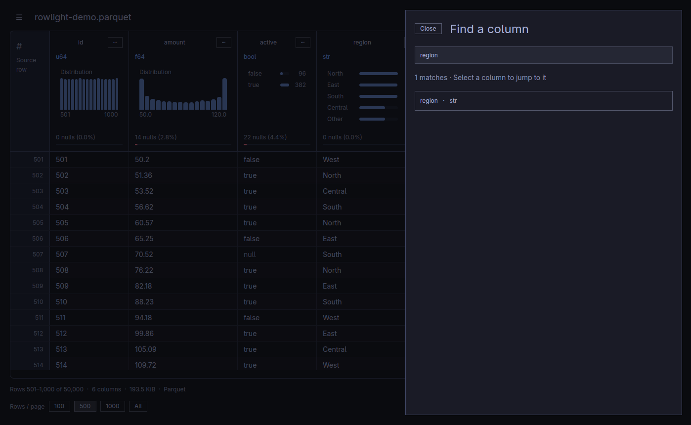
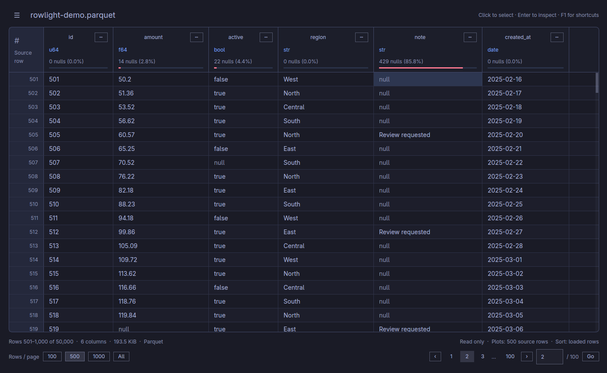
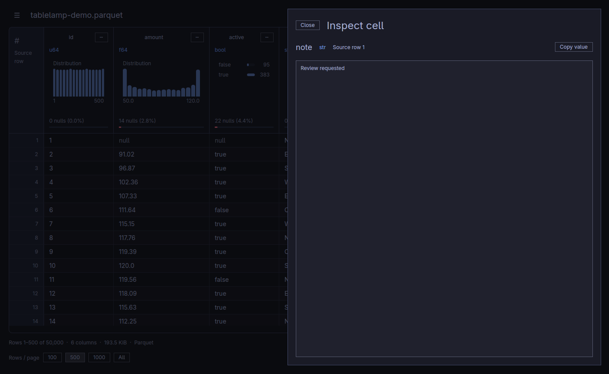
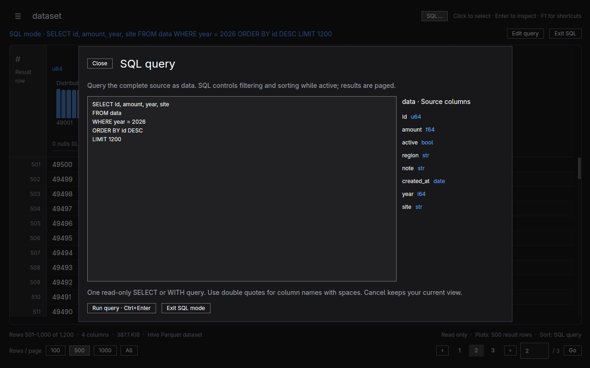

Rowlight / Documentation
User guide
On this page
Open a file, understand its columns, and explore its rows. Rowlight is read only: sorting, filtering, and copying leave your source file unchanged.
Install Rowlight · Supported formats · Keyboard shortcuts · Back to the project
Start here
- Open a file. Choose Open file… from the top-left menu, press Ctrl+O (Cmd+O on macOS), or drop a file onto the window.
- Look at the headers. Each column shows its name, data type, null count, and a small distribution chart when its type supports one.
- Explore a column. Click its chart for a larger view and statistics. Press Esc to return.
- Browse the rows. Scroll vertically and use the pagination controls at the bottom to load another page.

Note: Header charts describe the current page. For a broader view, choose File overview… from the menu; it samples across the file. Neither view promises exact whole-file statistics for a large file.
Find your way around
| I want to… | Go to |
|---|---|
| Move through a large file or sort rows | Browse and sort |
| Find, resize, or hide a column | Focus on the columns you need |
| Understand a distribution or see file metadata | Understand the data |
| Read a long value or copy a selection | Inspect and copy cells |
| Open a Hive folder or run SQL | Folders and SQL |
| Show only matching rows | Filter the file |
| Keep my view and follow my desktop theme | Make the view your own |
| Fix a loading or display problem | Troubleshooting |
Settings and opening options use dialogs. Column search, visibility, filters, file details, and cell inspection open in side drawers, with the table visible behind them. Close a tool with Close, Esc, or a click outside it; your table position stays in place. Expanded charts and the file overview use the main view so they have room to show the data.
Browse and sort
The shaded # / Source row gutter shows each row's original position in the file. It is separate from the file's data columns and stays attached to the same record after sorting or filtering.
Missing values appear as muted, italic null; empty text appears as (empty string) in the accent color. NaN and infinity use the warning color. These labels distinguish the values without changing them.
Move through rows and pages
The mouse wheel scrolls rows. Use a horizontal gesture or the bottom horizontal scrollbar to move through a wide table. Headers and cells move together, and the vertical scrollbar stays at the visible right edge, even when later columns are in view.
The status bar shows the source information, displayed row range, and pagination. Choose 100, 500, or 1,000 under Rows / page. Use the page buttons, or press Ctrl+G (Cmd+G), enter a page number, and press Enter.
Home / End goes to the first / last row of the loaded page. Ctrl+Home / End (Cmd+Home / End) goes to the beginning / end of the file. Alt+Left / Right loads the previous / next page. See the complete shortcut reference for selection and screen navigation.
Sort a column
Click a column name to cycle through ascending → descending → source order. Nulls sort last. Sorting applies to the loaded page; in All mode it applies to all loaded rows. With filters active, it sorts the loaded matching page.
Show all rows
Choose All under Rows / page to load the complete file when it fits the memory budget. If Rowlight declines the load, choose a paged size and keep browsing. This choice is remembered, and the memory check runs again for every file. Folders and freshly executed SQL queries start paged when that preference is All; explicitly choose All afterward if needed.
For very large files, start with 100 or 500. The large-file reference explains the limits, including why a small compressed file can still need substantial memory.
Focus on the columns you need
Columns follow the order stored in the file. Hive partition columns follow the physical columns; SQL results follow the SELECT list.
| Task | Action |
|---|---|
| Jump to a column | Press Ctrl+F (Cmd+F), search by name or type, and select a result. |
| Choose visible columns | Menu → Show / hide columns…; use the checkboxes. Keep at least one visible. |
| Hide one column | Its ⋯ menu → Hide column. |
| Restore every column | Show / hide columns… → Show all. |
| Resize a column | Drag the right edge of its header. |
| Fit its displayed values | Double-click that edge, or ⋯ → Fit visible values. |
| Use compact headers | Turn off Show column plots in the top-left menu. Names, types, and null information remain visible. |
Widths are remembered per file and stay between 120 and 800 pixels. Fit visible values measures the header and up to 40 displayed values; use the inspector for content that still does not fit.
See column search and compact headers


Understand the data
Explore a column
Click a chart, or use ⋯ → Column details…. The column fills the existing app window with a larger chart and a scrollable statistics panel. Hover over bars to see their counts, percentages, and observed values. Use Back to table or Esc to return; the app does not change the window's fullscreen state.

| Column type | What you see |
|---|---|
| Numbers | Histogram, range, mean, median, quartiles, and sample standard deviation |
| Dates, timestamps, time, durations | Chronological histogram with typed values |
| Booleans | False / true frequency bars and percentages among non-null values |
| Text, categorical, enum | Frequent values; text also includes empty-string counts and character lengths |
| Binary or nested values | Type and null information; use the cell inspector to explore individual values |
Nulls are counted separately. Numeric calculations exclude NaN and infinity. All-null columns have no distribution chart.
Type labels reflect the file's Polars schema: for example, str is text, f64 is a floating-point number, i64 is a signed integer, and bool is true/false.
The scope matters: page charts use the loaded rows, capped at the first 1,000 in All mode. Expanding a chart reuses that same sample. Sorting does not change it. Distinct counts are exact within the sample; they are not the file's total number of distinct values. See chart and statistics details for precision and sampling limits.
Get a broader file overview
Choose File overview… from the menu. Rowlight reads up to 1,000 rows across 16 evenly spaced windows, including the beginning and end of a larger file. The overview shows sampled null percentages, distinct values, ranges or frequent categories, and expandable charts. Files with at most 1,000 rows are summarized completely.
The overview runs in the background and can be cancelled. Its sample describes the original, unfiltered source, even while the table has active filters or a SQL query. An evenly spaced sample can miss rare values or patterns; use it to orient yourself, not as an exact whole-file report.
See the file's metadata
Choose File details… to open a side drawer with the full source path, size, and complete schema in file order. Parquet details include its writer, compression, encodings, and row-group sizes; IPC details include record batches. This view uses metadata already read when opening the file.
Inspect and copy cells
Click a cell to select it. Use the arrow keys to move, or Shift+click / Shift+arrows to extend a rectangular selection. Click a source-row number to select its entire row.
Double-click a cell, or select it and press Enter, to open the inspector beside the table. It shows the value, data type, and original source row (or result row in SQL mode). This is useful for long text, binary data, and nested values. Use Copy value to copy the inspector's text, then Esc to close the drawer.
See the cell inspector

| Copy action | Result |
|---|---|
| Ctrl+C (Cmd+C) | Selected cells; a multi-cell selection is tab-separated text. |
| Ctrl+Shift+C (Cmd+Shift+C) | Selected rows with visible column names, in displayed order. |
| Ctrl+A (Cmd+A) | Select all loaded rows and visible columns before copying. |
Copying is limited to 10,000 cells and 1 MiB. Nulls copy as null; empty strings copy as empty fields. Multi-cell output quotes tabs, newlines, and quotes; a single cell copies its raw value. Binary values use hexadecimal.
Table previews show up to 256 characters. The inspector shows up to 65,536 characters and 32 nesting levels, with a notice when truncated. In that case Copy displayed text copies only what the inspector shows. Grid copying rejects an oversized cell instead of silently shortening it.
Filter the file
- Open a column's ⋯ → Filter… menu.
- Choose a condition and enter a value when needed.
- Select Apply filter. Follow the scan progress in the status bar.
For example, use Contains on a text column to find a case-sensitive substring, Between (inclusive) on a number column to select a range, or Is null to find missing values. Boolean filters offer True / False. Use Equals with an empty text value to find empty strings.
Filters apply to the whole file. Up to eight filters on different columns combine with AND, so a row must match all of them. After the scan, pagination shows the exact matching row count. Remove an individual filter chip or choose Clear all above the table to restore the unfiltered view.
Scanning runs in the background; Cancel keeps the prior view. Large or remote files can take time and require substantial reads. The results keep their original source row numbers, and page charts describe the loaded matches. See filter formats and limits for date/time inputs and memory behavior.
Folders and SQL
Open a Hive folder
Choose ☰ → Open Parquet folder…, or press Ctrl+Shift+O (Cmd+Shift+O on macOS). Select the dataset root above its key=value directories. For example, files under year=2026/region=North/ gain year and region columns without loading the entire folder into memory.
A folder opens with paging even if your saved row choice is All. Browse, filter partition columns, and inspect charts as usual. File details includes the file count. Reopen the folder to discover newly added files. Files must have matching schemas and partition keys; see folder requirements.
Query the complete source
- Open SQL… above the table, or press Ctrl+Shift+L (Cmd+Shift+L).
- Write a query using the table
data. The editor lists the original columns and types beside your query. - Choose Run query, or press Ctrl+Enter (Cmd+Enter).
- Browse the paged results. Choose Edit query to revise it or Exit SQL to return to your previous filters, sort, and page.

The editor starts with a 1,000-row preview query. Remove or change LIMIT when you need a different result. For an exact row count:
SELECT COUNT(*) AS rows FROM data
For a Hive folder containing year and region:
SELECT region, COUNT(*) AS rows
FROM data
WHERE year = 2026
GROUP BY region
ORDER BY rows DESC
SQL works on the whole source; existing column filters and page sorting do not affect it. Those controls are disabled while the query is active. Include WHERE and ORDER BY in the query to filter and sort. Use LIMIT when you only need a preview, and quote column names containing spaces with double quotes.
The shaded gutter becomes Result row, and charts describe the loaded result page. File details and File overview still describe the original source. A successful query, its view, and your draft text are remembered separately; reopening recomputes the successful query. An invalid draft or cancelled query leaves the previous result usable. If a saved query no longer works, the source opens normally with a notice and your draft remains editable.
If a query fails, the editor reopens with your draft and a short explanation. Keep editing to correct it. Details shows the full error in a scrollable box; Copy details copies it for troubleshooting. Use single quotes for text values (WHERE region = 'North'); double quotes refer to column names.
Large queries run in a separate, cancellable worker with memory and temporary-storage checks. CSV/TSV and remote Parquet require a full staging read for SQL. See SQL behavior and limits before querying a very large or remote source.
Make the view your own
Rowlight saves page size, plot visibility, the association-prompt decision, and window dimensions automatically. For the 20 most recent sources, it also remembers the page, sorting, column widths and visibility, filters, and scroll position. SQL drafts, the last successful query, and its separate page/column view are remembered too. CSV/TSV options and the selected AWS profile are saved. Reopening a remembered source restores its view; saved filters are scanned again and active SQL queries are recomputed.
Use Recent files… to return to a source. Clear history removes remembered sources and their saved views; the current source stays out of history until you open another one. Starting the app without a file does not automatically reopen the last source.
Choose ☰ → Settings… → Appearance to select System, Light, or Dark. Your choice applies immediately and is remembered between launches. System is the default: on Linux with a usable Omarchy theme, it follows the current palette, including live changes. Elsewhere, including Windows and macOS, it follows the operating system’s light or dark appearance and updates while the app runs. Light and Dark use Rowlight’s built-in palettes. Rowlight does not modify your desktop theme. See the theme gallery.
Where preferences live
| Platform | File |
|---|---|
| Linux | ${XDG_CONFIG_HOME:-~/.config}/parquetviewer/settings.json |
| Windows | %APPDATA%\parquetviewer\settings.json |
| macOS | ~/Library/Application Support/parquetviewer/settings.json |
Close the app before backing up or resetting this file. Renaming it lets Rowlight start with defaults while preserving your backup. Settings use atomic replacement; invalid or older settings fall back to validated defaults. Resize and scroll updates are flushed on close. Fullscreen/maximized dimensions do not replace the remembered window size; your window manager controls placement.
Non-UTF-8 local paths still open but cannot be saved in JSON history. URLs with a query or fragment, including signed URLs, are excluded from history and saved views.
Omarchy's current palette is read from ~/.local/state/omarchy/current/theme/colors.toml and theme.name, with a legacy config-directory fallback.
Troubleshooting
| What happened? | What to try |
|---|---|
| Double-click opens another application | Choose Associate Parquet files… from the menu, or follow the platform association steps. |
| All is rejected | Select 100, 500, or 1,000 rows per page. The memory guard also runs when a remembered All preference is restored. |
| SQL fails or reaches a budget | Edit the query, narrow its columns/WHERE clause, or add LIMIT. The previous view remains available; use Exit SQL to return to normal browsing. |
| A folder reports mismatched schemas or partition keys | Select one compatible dataset root; see Hive folder requirements. |
| A CSV has the wrong columns or fails on a later page | Set its delimiter/header in CSV / TSV options…. For mixed types, choose Read all columns as text and Save and apply. |
| CSV reports invalid UTF-8 | Convert it to UTF-8, or explicitly choose replacement decoding in CSV / TSV options…. Other encodings are not automatically detected. |
| A chart is absent | Binary, nested, and all-null columns have no distribution plot. Very large sample values can also cause chart/statistics calculations to be skipped with an explanation. |
| The table's chart counts differ from the overview | The table summarizes its loaded page; the overview samples across the unfiltered file. Check each view's scope label. |
| A remote source will not open | Check that you have a cloud build, usable provider credentials, and a server supporting ranges and object-version checks. See remote Parquet. |
| The source changed while browsing | Reopen it to refresh metadata and the remote cache. Incompatible saved filters are cleared with a notice. |
For a reproducible problem, open an issue with your OS, build version, format, steps, and error message. A small synthetic example is helpful; omit private data and credentials.
Installation · Formats and reading behavior · All shortcuts · Development